Standard landing sites — Moon, Mars and Earth approved initial roster
October 7, 2026. Q4 initial roster settled from prior producer direction, confirmed October 7; this document is not a modernization release. Existing playable entries and historical records remain in place. Campaign progression stays parked; its useful scenes can become standalone activities.
Approved initial scope
Moon: Tranquility Base + Connecting Ridge, the initial two standard Lander/Collector pairs. Mars: Jezero/Kodiak + Gale/Mount Sharp, the initial two standard Lander/Collector pairs. No further Mars standard-site expansion is approved. Modernize these upgraded scenes to standalone, campaign-worthy quality.
Earth: Grand Canyon is the first approved newly authored standard-site concept. Victoria Falls is newly approved as the second pair, after Grand Canyon. Uyuni, other Earth destinations and any fixed Earth site count remain unapproved. Existing Earth scenes are inspiration, not automatic promotion.
What is actually implemented
src/data/modernFlight.ts currently integrates Mercury Caloris/Hollows and Venus Venera/Maat into the modern standalone shell. Tranquility Base is now integrated too; Connecting Ridge is now integrated with revised polar terrain; Jezero/Kodiak is now integrated with the existing expedition-derived terrain; Gale/Mount Sharp is now integrated with the modern pair and clearer layered slopes; Grand Canyon and Victoria Falls are now delivered as newly authored Earth pairs. The approved construction sequence is complete. A populated Play roster is therefore not evidence that every entry already meets the modern standard.
src/dev/campaignAssets.ts exposes Tranquility's connected campaign flight, a separate Connecting Ridge pair, and standalone Jezero/Gale flight pairs. It explicitly states that Mars is not connected to the campaign. src/systems/flightV21.ts selects the distinct stages and saved-record keys. The review concerns those actual assets, not the superseded native scenes with similar place names.
Captured evidence
The following are actual local production-build captures from the existing upgraded Lander scenes at 1100 × 650, not new concept art or approval of gameplay. Captures inspect startup composition; they do not establish a finished Collector route. Tranquility reads as an open, subdued plain; Connecting Ridge is substantially darker with stronger basin silhouettes. Jezero has a recognizable isolated butte. Gale reads as a broad distant mountain with sparse foreground buttes; its surface detail and landing-area identity need a stronger visual review before promotion. Tranquility also needs its Apollo landmark identity to read clearly rather than relying on the place name. Earth's canyon has useful depth and color structure but simplified surfaces/trees, so it is inspiration for the requested rebuild rather than a finished new Earth site.
Tranquility Base
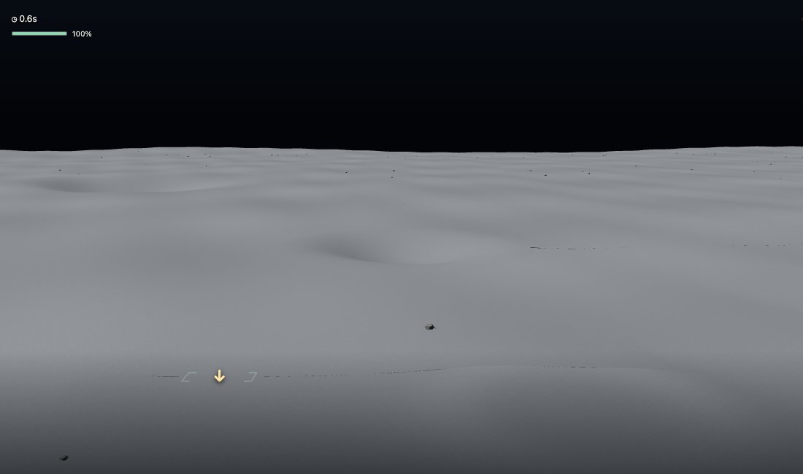
Connecting Ridge
Historical prototype below is superseded: producer rejected its two oversized adjacent crater composition. Retained solely as design history.
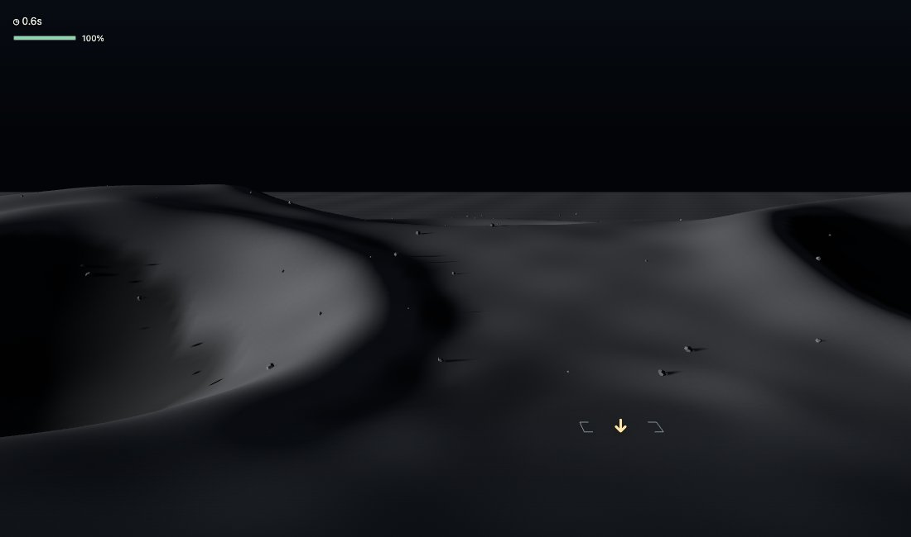
Jezero / Kodiak
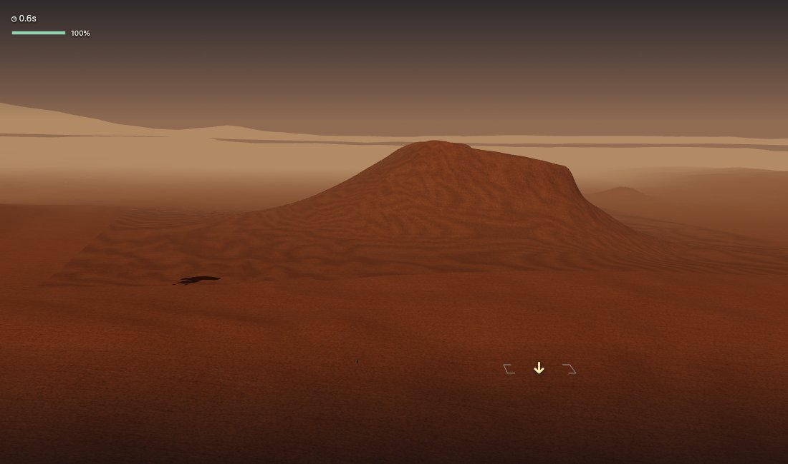
Gale / Mount Sharp
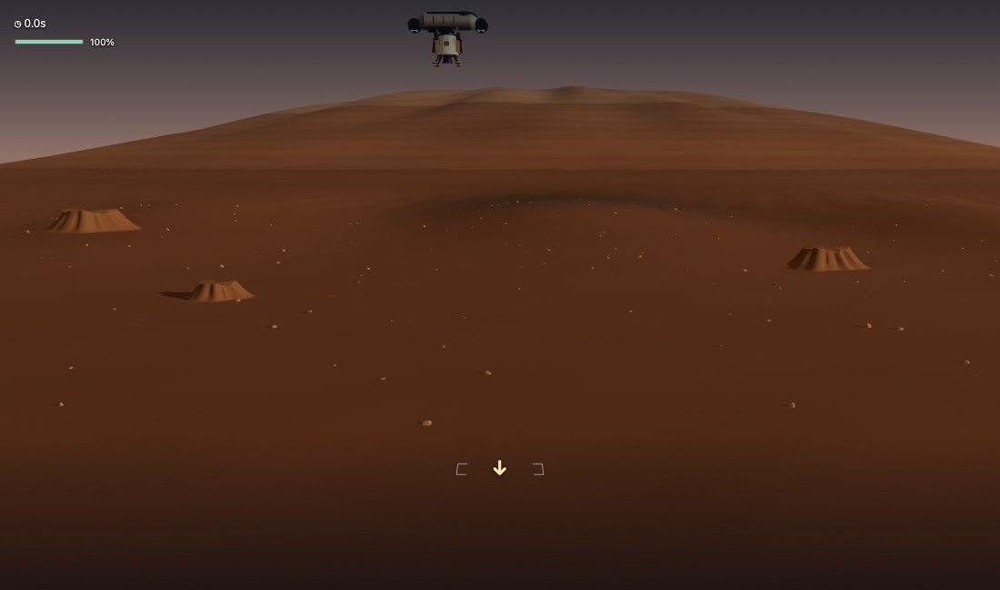
Grand Canyon
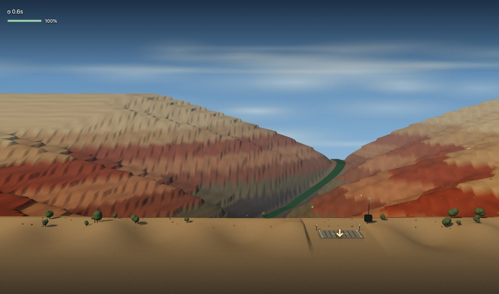
The Gale capture uses normal Launch during the delivery sequence. Its normal release was verified separately; an initial capture attempt that forcibly bypassed delivery produced an out-of-range state and was discarded. With no player input, the normal run later failed for excessive touchdown speed. This does not establish any handling defect or successful human completion.
Moon shortlist
| Candidate | Existing asset and play value | Work before promotion | Recommendation |
|---|
| Tranquility Base | Upgraded campaign flight scene at Apollo 11's setting; a clear low-relief counterpart to the south-polar terrain. | Standalone launch and both modes, modern settings/records, e-card/caller return, visual continuity with the lunar outing and a distinct Collector route. | Standalone pair delivered October 7; P20 is optional feel/visual QA. |
| Connecting Ridge | Separate authored south-polar scene: low light, ridge and adjacent shadowed basins; its own flight record key. | Review landing visibility on phone and Collector sightlines. Keep the candidate interpretation explicit. Resolve its relationship to the legacy shk/Artemis menu entry without renaming historical saves. | Second pair; visually distinct from Tranquility. |
Connecting Ridge terrain is procedurally authored, not sampled LRO elevation. Its use as an Artemis candidate must not imply NASA selected a final touchdown site. Avoid using a changing mission number as the permanent geographic site name.
Tycho, Hadley and other legacy lunar scenes remain useful reference/inspiration material. Do not automatically add them as more standard pairs. Cone Crater's old climber must not return through this review. Scooter and golf remain separate Specials; their existence does not establish a standard-flight roster.
Mars shortlist
| Candidate | Existing asset and play value | Work before promotion | Recommendation |
|---|
| Jezero / Kodiak Overlook | Upgraded flight reuses the expedition's Kodiak terrain and surrounding floor. Recognizable destination continuity with the rover activity. | Preserve measured landform proportions and cleared landing space; review Collector routing, loading and camera sightlines. Modernize launch/results/records without changing expedition progress. | First Mars pair. |
| Gale / Mount Sharp | Authored plain, layered mountain and foothills provide a different silhouette and landing composition. | It is an interpreted compressed scene, not measured terrain. Review scale, lighting and flight-course decisions independently of the ski activity. | Second Mars pair. |
Olympus, Valles, polar sites and other older scenes are not automatically promoted. Further Mars additions are outside this approval. Do not remove their Encyclopedia articles merely because they are outside the recommended initial flight roster. Rally/airlift and Gale skiing continue as distinct Specials; this review does not shorten or redesign them.
Earth concept priorities
| Candidate | Reason to develop it | Main risk / needed evidence | Proposed action |
|---|
| Grand Canyon | Strong cliffs, river and depth cues can make descent and lateral approach legible. An upgraded flight-stage interpretation already exists as reference. | Generic layered cliffs are not enough; choose a specific viewpoint, grounded terrain proportions and a clear flight route. | First new Earth concept, built from the ground up; reuse ideas, not automatic legacy promotion. |
| Salar de Uyuni | A broad reflective landscape can contrast with every cliff-heavy site. | A flat mirror alone may produce little to anticipate. Establish a landing reference and meaningful Collector route before expensive art. | Unapproved possibility; revisit only after Grand Canyon build/review. |
| Victoria Falls | Waterfall edge, gorge and spray offer a strong landmark and approach composition. | Protect target visibility through mist and validate water/mobile rendering. Course layout is implementation design. | Approved second Earth pair; build after Grand Canyon. |
| Everest | Mountain terrain is recognizable. | Potential overlap with Gale's mountain identity; route and scale require a stronger reason than height. | Later candidate. |
| Rio | Coast, peaks and architecture can create a distinctive setting. | Large asset burden and crowded flight silhouette. | Later candidate. |
| Great Barrier Reef | Shallow-water patterns could be visually distinctive. | A standard lander needs a defensible touchdown area and a route that does not become empty water travel. | Hold until activity/site concept is clear. |
| Aurora setting | Dynamic sky can enhance a real ground location. | An aurora is a phenomenon rather than a geographic landing site. | Treat as atmosphere for an eventual named site. |
| Paricutín | Volcanic terrain and a strong cone silhouette. | Needs a distinct Earth approach and composition rather than duplicating Venus's volcanic identity. | Later candidate. |
No Earth candidate is approved as a finished modern level by this review. Before construction, select a concrete view, create the reference rendering, and develop the new scene toward it. Maintain a coherent Earth palette while allowing real local differences. Preserve old records as history, not competitive times for rebuilt geometry.
Promotion requirements
For each approved pair: direct standalone entry, visibly distinct Lander and Collector objectives, readable touchdown/route on phone, shared e-card with actual craft and path, caller-aware Back, immediate retry, separate identities for incompatible course records, save migration that preserves history, and no campaign gate. Validate both modes and desktop/mobile flow. Human feel and visual sign-off remain separate from automated completion.
Q4 — settled producer direction and remaining limit
Q4a: Moon's Tranquility + Connecting Ridge approved. Q4b: Mars's Jezero/Kodiak + Gale/Mount Sharp approved, without further roster expansion. Q4c: Grand Canyon first approved for new Earth work, followed by newly approved Victoria Falls. Uyuni, other Earth destinations and a fixed Earth count remain unapproved.
Recorded October 7 as confirmation of prior direction. Preserve historical saves and shipped work; these approvals do not authorize unrelated site removal.
Tranquility standalone delivery — October 7
Tranquility keeps the upgraded campaign-quality terrain and four-target lunar Collector climb. Direct Play launches, on-demand Site Card/craft customization, mode-specific settings and records, the shared two-sided e-card, immediate retry, and caller-aware Visual/Play/Encyclopedia returns are integrated. Surface activities remain selectable from the Site Card; no campaign completion gate is added.
The landing and new standalone Collector both use the rendered outing terrain for collision. The original Collector’s flat contact plane remains unchanged in historical launches. Standalone records use astra.flightV3.moon.trq.records.v1; appearance uses a separate site key. Original native records, campaign settings, Moon Golf and Scooter saves are not rewritten. Gravity/thrust/contact tolerances are unchanged. Current keyboard controls: Left/Right turn, Space thrust, Shift toggles landing power; Collector opens HIGH after liftoff and restores MED/LOW near home. The four pickups remain actual interception targets.
The existing [scene reference](candidates/moon-trq.jpg) remains the visual target. A small background Apollo descent-stage landmark reuses the photo-led Eagle model without its departed ascent stage. Placement is compressed for gameplay and explicitly described as authored, not a measured reconstruction. NASA LRO imagery informs this landmark; the existing lunar terrain/palette is retained.
Validation: unit coverage checks separate records, terrain contact, four reachable targets and descent-only hardware. Chromium/WebKit checks exercise phone and desktop presentation, launches, results/records, historical-save retention, independent settings, caller returns and Special access. A control-input-only simulation completes both modes; this is feasibility evidence, not approval of feel. P20 asks Brian to land, collect all four targets and return, then assess approach readability, drift control and site identity.
Connecting Ridge standalone delivery — October 7 refinement
The revised scene uses an oblique worn crest, offset highlands and one off-axis shadowed basin. It removes the rejected adjacent oversized background bowls. The existing flight-plane profile remains unchanged, preserving approaches; both standalone modes now use that same visible profile for terrain contact. Existing lunar gravity, thrust, flight rules, pickup layout and score formula stay. Five polar Collector targets remain; this differs from Tranquility's four.
The preserved moon_shk roster ID maps explicitly to the crg flight site; Play calls it Connecting Ridge. Legacy geographic reference content/saves remain intact. The old astra.flightV21.moon.crg.v1 data is never overwritten; modern standalone appearance, per-activity setup and mastery records use their separate existing V3 families. Old undefined-version scores remain historical, never compared with mastery-v2. No destructive migration is needed.
The landscape is authored and compressed, not sampled LRO terrain or a selected NASA touchdown site. NASA's Connecting Ridge visualization and south-pole terrain/lighting comparison support the geographic/illumination character, not this exact game layout.
Validation: 3,365 unit tests passed, 2 skipped; production build passed. Chromium/WebKit check desktop/phone launches, targets, terrain, e-cards, records, independent setup, preserved legacy data and simulated full completion of both modes. Actual captures were reviewed for target visibility, shadow composition and central playfield clearance. Human course feel remains unapproved. At this checkpoint the next construction was Jezero/Kodiak; see its delivery below.
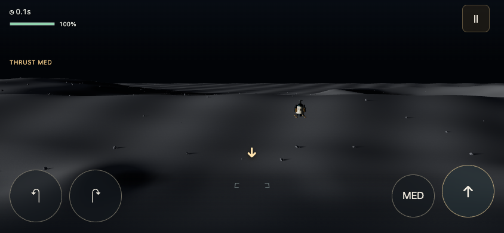
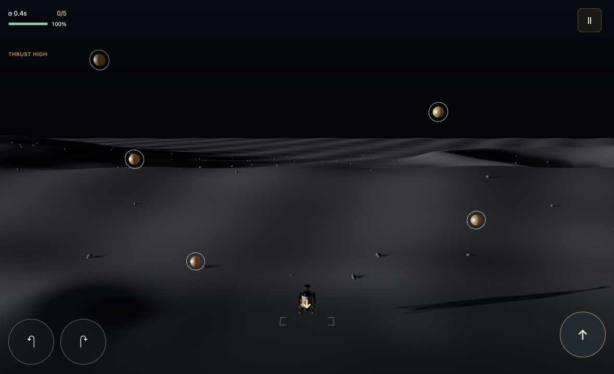
October 7 — Jezero / Kodiak standard pair delivered
Play → Mars → Jezero · Kodiak Overlook now launches the modern standalone Lander and Collector. Shared e-card, records, independent activity tuning and caller-aware returns match the established shell. Kodiak reuses the expedition terrain snapshot; material-only layer shading preserves its geometry and compressed proportions. The authored clearing is explicitly not Perseverance’s historical touchdown site. Visible terrain contact now applies to both modern Mars modes; camera fitting keeps the four-target course in view without changing its targets or boundaries. Gravity, gusts, thrust, controls and scoring remain unchanged. Historical native and prototype records remain stored separately from modern mastery-v2 records; Relay, Wet Jezero, expedition and Gale skiing remain intact.
Validation: 3,367 tests passed (2 skipped); production build and Chromium/WebKit phone/desktop launch, four-target visibility, e-card/records, setup isolation, legacy preservation and simulated complete flights passed. Actual captures were inspected. Automated completion establishes feasibility; Q4/P9 human feel remains pending. Next construction: Gale / Mount Sharp, then Grand Canyon and Victoria Falls.
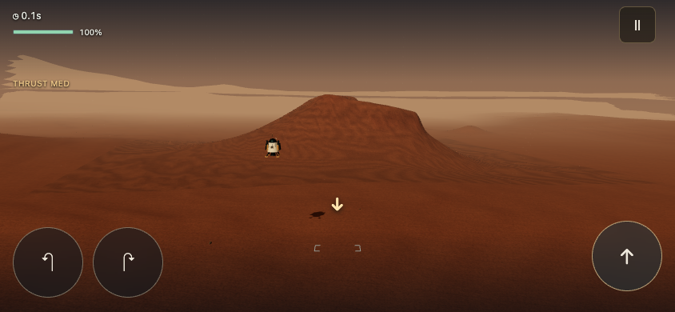
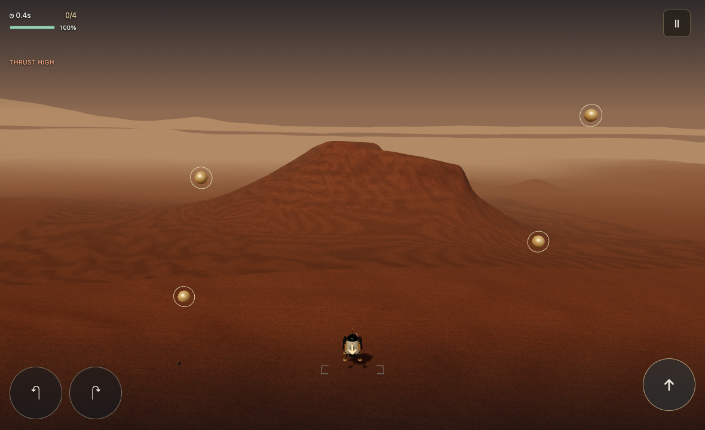
October 7 — Gale / Mount Sharp standard pair delivered
Play → Mars → Gale · Mount Sharp now launches the modern standalone Lander and Collector. Both share the authored Aeolis Palus plain, broad mountain, dune belt and foreground outcrops. Continuous material bands make the distant layered slopes readable without changing the mountain geometry or the four-target course. The Site Card’s terrain-only photograph faces the mountain rather than cropping it above the frame. Modern Collector contact uses the visible terrain; the original prototype keeps its historical contact plane. Mars gravity, gusts, thrust, controls and score formula are unchanged. Phone/desktop overview fitting carries forward from Jezero.
Shared Site Card, craft, independent Lander/Collector settings, e-card and records use the established modern workflow. The card explicitly labels this compressed authored view, distinguishing it from a surveyed Bradbury Landing panorama and from the ski expedition’s measured terrain. NASA’s Mount Sharp reference remains linked. The preserved mars_gale identity routes to the modern pair; native and astra.flightV21.mars.gale.v1 records remain intact and separate from new astra.flightV3.mars.gale.records.v1 mastery-v2 records. No destructive migration. Free roam and ski descent remain separate existing Specials.
Validation: 3,369 tests passed (2 skipped), production build passed. Chromium and WebKit verify phone/desktop flows, all four targets in view, Site Card/results, records, separate tuning, legacy retention, caller returns, portrait cards, preserved ski launch and simulated complete Lander/Collector flights. Actual phone/desktop captures reviewed. Automated completion proves feasibility; Q4/P9 gameplay feel remains for producer review. Next authorized construction: newly authored Grand Canyon, then Victoria Falls.
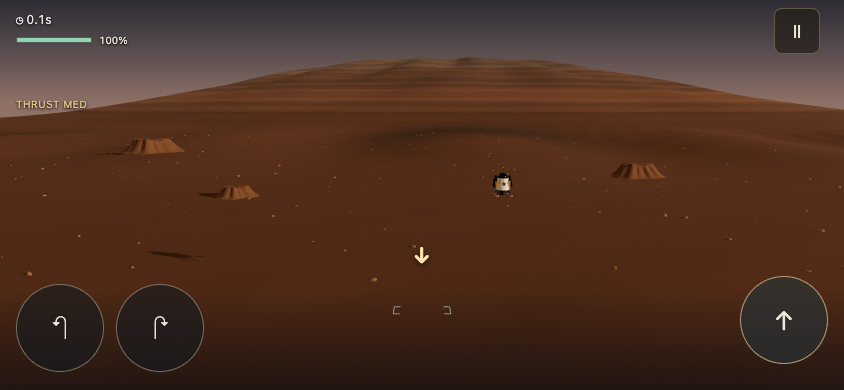
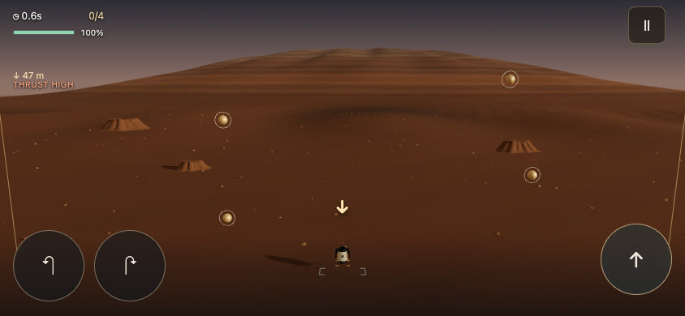
October 7 — Grand Canyon standard pair delivered
Play → Earth → Grand Canyon (Present day) launches the modern Lander/Collector. A newly authored South Rim / Mather Point interpretation replaces the prototype scene in this route: pale rim, stepped temple butte, eroded terraces, deep river gorge, sparse rim vegetation and cool distance haze. A saved concept guides the composition; actual phone/desktop captures were inspected. Terrain and distances are explicitly compressed and authored, not a surveyed overlook reconstruction.
Both modes share the clearing and visible rim contact, original Collector target layout, Earth gravity/drag/wind and existing controls/scoring. Modern Site Card, independent tuning, craft, results, records, retry and caller-aware returns follow the established shell. Historical native/prototype records remain intact; separate modern mastery records compare matching setups. Year 3000 retains the existing underwater scenes and variant records rather than launching atmospheric flight. No broader time-system or Earth roster redesign. See docs/scenes/grand_canyon_standalone.md for provenance and acceptance evidence.
Validation: 3,372 tests passed (2 skipped), production build passed. Chromium/WebKit phone/desktop flows, target visibility, failure/retry, result/record paths, setup isolation, legacy retention, caller returns, portrait cards and underwater launches passed. Scripted default-physics flights complete both modes and return with all targets. Human feel remains for Q4/P9; automation does not approve gameplay. Next authorized construction: Victoria Falls standard Lander/Collector pair.
See [implementation/provenance](scenes/grand_canyon_standalone.md).
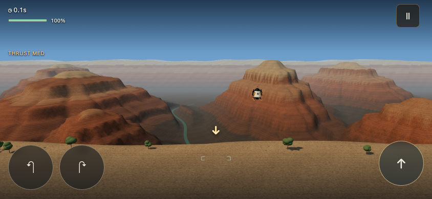
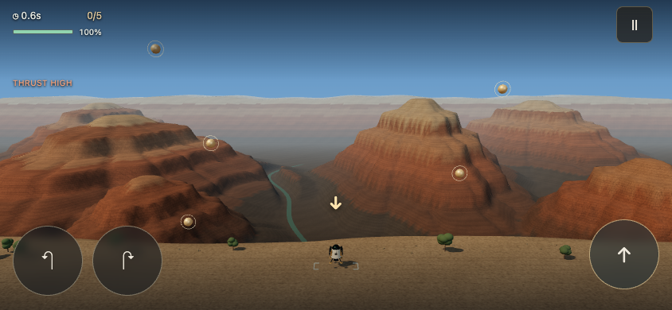
October 7 — Victoria Falls standard pair delivered
Play → Earth → Victoria Falls (Present day) launches the modern Lander/Collector. The new authored First Gorge view faces Mosi-oa-Tunya's broad waterfall curtain: weathered basalt rims, upstream river, divided falling water, recessed pool, forest and animated background spray. A saved concept guides the scene; actual phone/desktop captures were inspected. Relief, spacing and flow are composed for play, not surveyed terrain or a seasonal forecast. The planar camera and mobile mesh simplify the reference's cliff detail and depth.
Both activities share the southern clearing and visible rim contact, original Collector layout, Earth gravity/drag/wind, controls and scoring. Water and mist remain scenery behind the flight plane. Modern Site Card, independent tuning, craft, results, records, retry and caller-aware returns use the established shell. Historical native/prototype records remain intact; modern mastery records compare matching setups. Year 3000 still launches the existing underwater scenes and variant records. See docs/scenes/victoria_falls_standalone.md for provenance.
Validation: 3,375 tests passed (2 skipped); production build passed. Chromium and WebKit phone/desktop flows, target visibility, failure/retry, e-card/records, setup isolation, historical saves, caller returns, portrait cards, animated water, graphics-error checks and both underwater launches pass. Scripted default-physics flights land and collect all five targets before returning. Human feel remains pending under Q4/P9; automation establishes feasibility, not fun.
This completes the approved Connecting Ridge → Jezero/Kodiak → Gale/Mount Sharp → Grand Canyon → Victoria Falls construction sequence. Cross-world review can now compare the delivered pairs. P9 time/Year-3000 review remains open for follow-up; Q3 relay retention and the preserved priority playtests remain pending. No broader Earth roster or time-system redesign is authorized by this delivery.
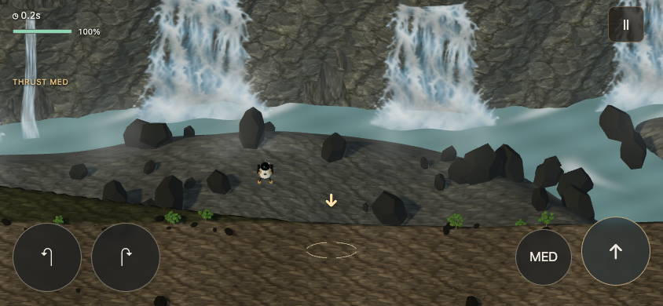
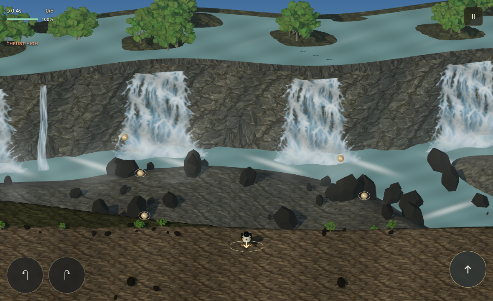
October 7 — Victoria Falls reference composition and wildlife revision
Producer rejected the first release: its frontal coarse curtains read as a white wall and it omitted the earlier birds. The selected angled concept is now the actual production panorama, with the pictured craft/shadow removed from its rocky clearing. Real playable craft, pad and targets render separately. Layered falling water, pool ripples and subtle spray animate within the image; small distant bird groups glide/flap for roughly 12 seconds in each 26-second cycle. Bright daylight, cliff detail, diagonal river outlet, forest and foreground vegetation come directly from the reference rather than another coarse geometric approximation.
This is a photographic matte with animated layers, not a full 3D reconstruction. Landscape gameplay preserves the complete composition with viewport fitting; portrait cards crop the sides. The scenery does not track physics as a surveyed map. Gravity, contact profile, targets, camera timing, controls, scoring, records and Year 3000 routes remain unchanged. Actual approach, landing, overview and phone captures were inspected against the concept. Human visual/feel approval remains pending; the earlier delivery did not establish that approval.
Validation: 3,375 tests pass (2 skipped), production build passes. Chromium/WebKit checks cover both activities, loaded panorama, water/wildlife animation, targets, results/retry, independent settings, old records, caller returns and native underwater routes. Full simulated flights still complete both activities.
October 8 — Victoria Falls B implementation; SNES exploration preserved
Brian selected B (stylized 3D) as the current direction, after rejecting the fixed photographic scenery, abrupt craft/pad enlargement and repeated failed approaches. A is saved separately as the representative guide for future SNES-style edition exploration under backlog V1; it is not a replacement of the current visual norms.
Victoria Falls now uses modeled basalt terrain, an eroded cliff, separate textured water streams, river channel, islands, vegetation, mist and occasional modeled birds. Craft, gold surface guide and terrain share the same world coordinates. The site uses a fixed orthographic view: no altitude-triggered doubling of craft or guide. Lander uses a readable fixed field; Collector keeps its full route fitted for each viewport. The guide matches the existing 18 m touchdown footprint and sits on the actual contact clearing. Obsolete zoom sliders are hidden for this fixed-camera site; other sites and saved zoom preferences remain unchanged.
Earth physics, touchdown criteria, controls, course, scoring and historical/native records are unchanged. Year 3000 retains native underwater routes. B's generated image is a visual target, not proof of finished detail or producer feel approval; this mesh scene simplifies its forest and rock detail. Actual captures are kept separate from that image. See the scene document for geometry/asset provenance.
Validation: 3,375 tests pass (2 skipped), production build passes. Chromium/WebKit checks cover both activities, simulated full flights, successful/missed touchdowns, results/retry, tuning/save isolation, native underwater launches, modeled water and birds, fixed projected craft/pad scale at five altitudes and graphics errors. Producer visual/feel review remains open; automation never approves likeness/fun.